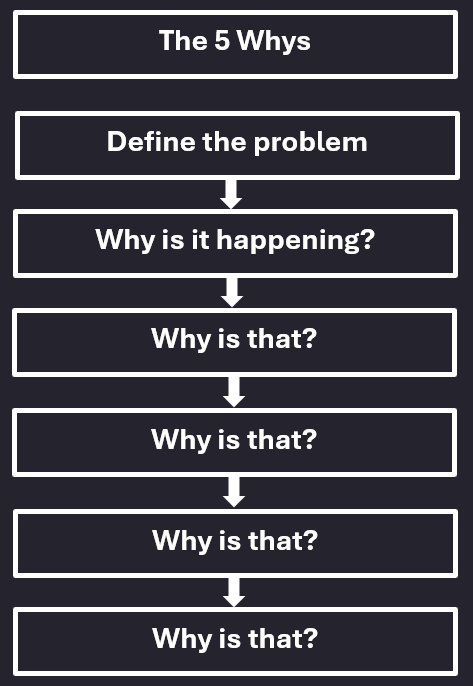
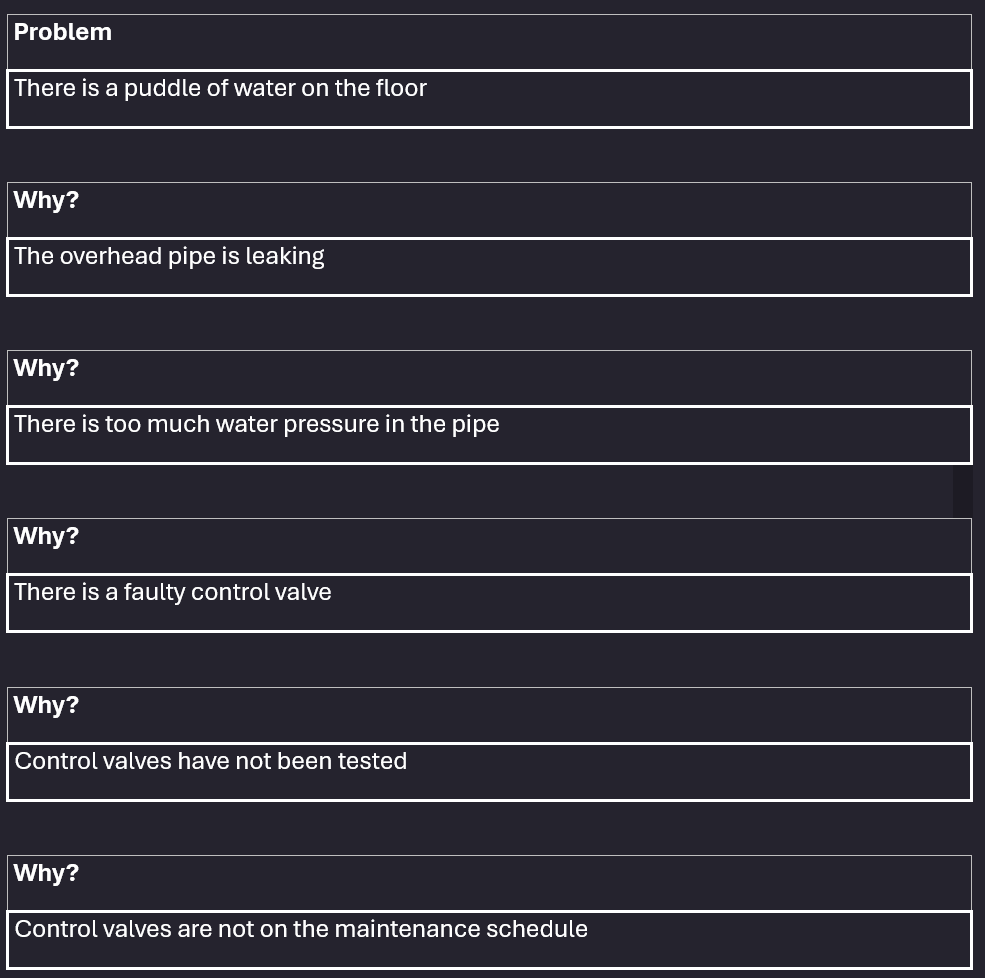

- בזיהוי שורש הבעיה
- בהבנת התהליך והבעיות שנגזרות ממנו
- בהבנת היחס בין הגורמים השונים לבעיה
- מתודה פשוטה ואפקטיבית ביותר
- בעיות ברמת מורכבות פשוטה עד בינונית
- לצורך אפיון צרכים של "לקוחות"
- זיהוי מדויק של בעיות בזמן העבודה השוטפת
- התחילו עם בעיה אחת, ספציפית וממודקת
- שאלו למה הבעיה מתרחשת?
- המשיכו לשאול למה בעקבות כל תשובה
- וודאו שכולם מסכימים על התשובות לשאלות ועל שורש הבעיה שאבחנתם
מתודת 5 whys היא מתודת פתרון בעיות שעוזרת לנו לזהות את שורש הבעיה ולהגיע לצורך האמיתי של ה"לקוחות" שלנו.
על פי המתודה, יש לשאול חמש פעמים את שאלת "למה?" כדי להגיע לשורש הבעיה. זאת במטרה לחפש ולהגיע לפתרון שורשי לסוגיה ולא פתרון נקודתי לסימפטום.
איך זה בדיוק עוזר לי?

מתי נשתמש במתודה?
איך נעשה את זה?
נסו בעצמכם-

כך נראית השיטה בעבודה על מערכת-
חשוב לזכור!
זיהוי נכון של הצורך והגעה לשורש הבעיה הכרחיים על מנת ליצור פתרון פשוט, רלוונטי ואפקטיבי!